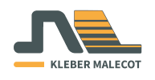
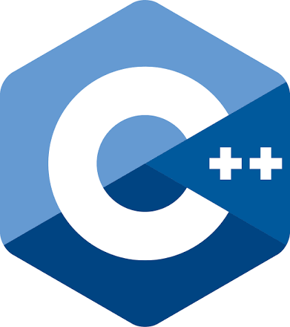
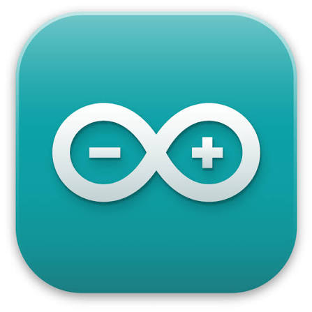
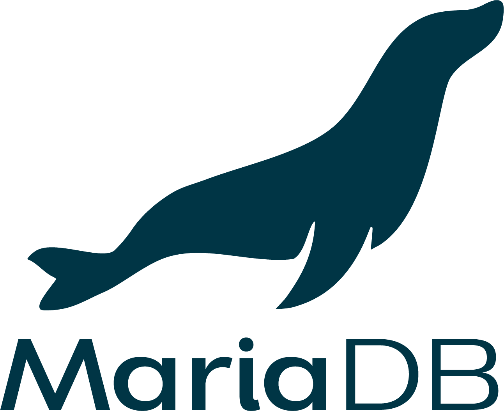
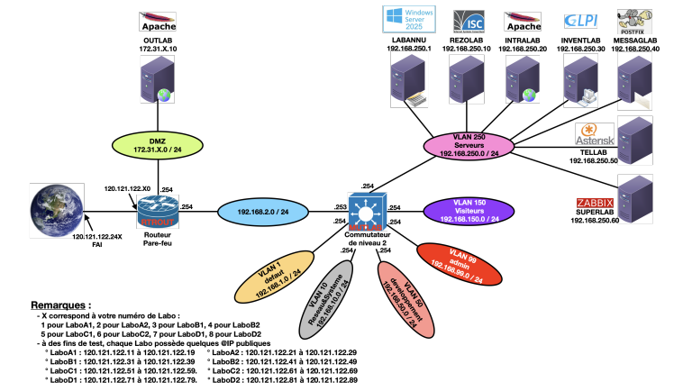

BTS SIO - Option SISR
2025-2027
Lycée Benjamin Franklin - Orléans
mohamed@Debian:~$ nano /var/www/p>
mohamed@Debian:~$ Je suis actuellement étudiant en 2ème année de BTS SIO (Services Informatiques aux Organisations) option SISR (Solutions d'infrastructures de systèmes et réseaux). Je souhaite intégrer un bachelor informatique juste après l'obtention du BTS, et à l'avenir, travailler dans le domaine de l'administration des réseaux et systèmes et de la cybersécurité. Ce portfolio vous donnera un aperçu de mon parcours, mes compétences et bien plus...
2025-2027
Lycée Benjamin Franklin - Orléans

2024-2025
IUT d'Orléans
2024
Lycée Benjamin Franklin - Orléans

18 mai - 3 juillet 2026
Kleber Malecot - Neuville-aux-Bois
1ère année de BTS SIO - Atelier de professionnalisation

1ère année de BTS SIO - Atelier de professionnalisation
2ème année de BTS SIO - Atelier de professionnalisation






